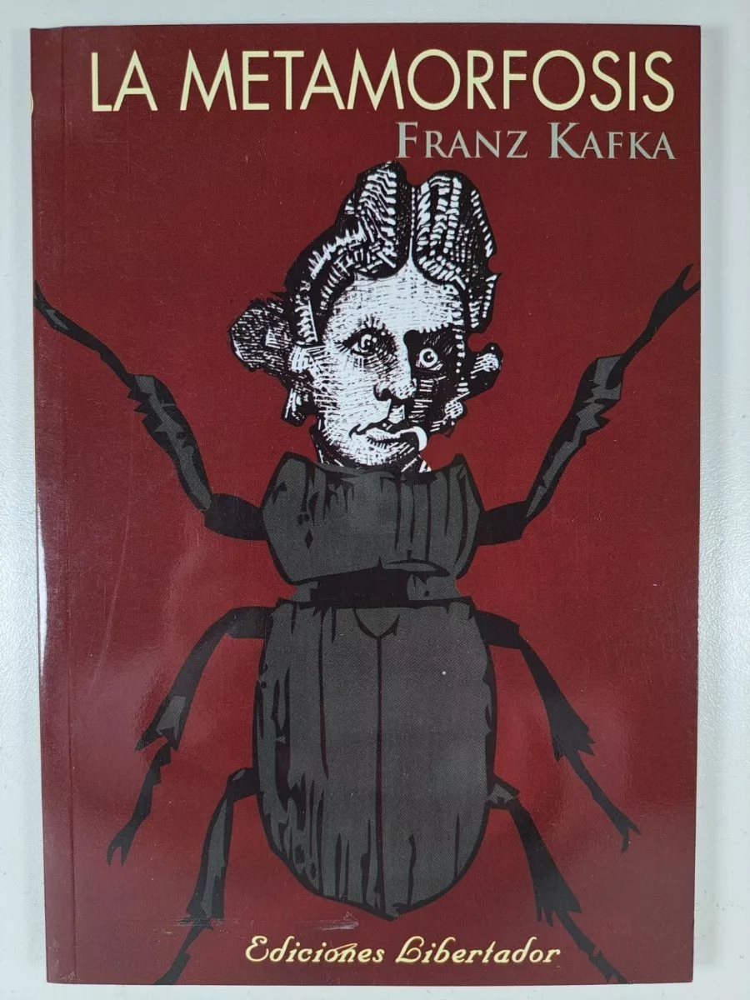
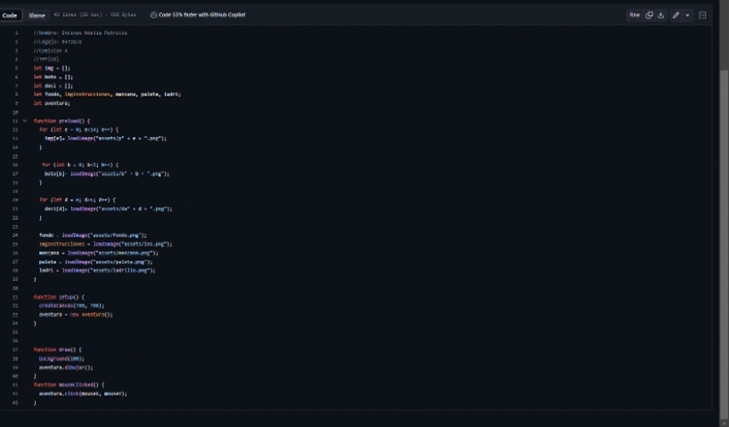

Aventura Gráfica
Esta aventura gráfica, fusionamos la obra "La Metamorfosis" con el clásico juego "Breakout". Encarna a Gregorio Samsa, y decide tu destino!
¡COMIENZA TU AVENTURA!
Novela

"La Metamorfosis" de Franz Kafka es una obra maestra literaria que sumerge a los lectores en la
desconcertante realidad de Gregorio Samsa. La historia se inicia con la impactante transformación de
Gregorio en un insecto gigante, desencadenando una serie de eventos que exploran la alienación, la
incomunicación y la búsqueda de significado en un mundo absurdo. A través de la narrativa única de
Kafka, la novela desafía las nociones convencionales de la existencia y ofrece una perspectiva
penetrante sobre la condición humana. La obra, publicada por primera vez en 1915, sigue siendo una obra
influyente que invita a la reflexión sobre la complejidad de la vida y la sociedad.
Juego

"Breakout", un icónico juego de arcade creado por Atari en 1976, ofrece una experiencia simple pero
cautivadora. En este juego, los jugadores controlan una paleta que rebota una pelota para romper bloques
en la parte superior de la pantalla. A medida que la pelota rebota y destruye bloques, los desafíos
aumentan en complejidad. La simplicidad del juego esconde su capacidad para cautivar a los jugadores a
través de su mecánica adictiva y su enfoque en la destreza y la estrategia. "Breakout" ha dejado una
huella duradera en la historia de los videojuegos, sirviendo como inspiración para numerosos títulos
posteriores y destacando la atemporalidad de su diseño y su impacto en la cultura gamer.
Proceso
El proceso de desarrollo de la aventura gráfica, que combina elementos de la novela "La Metamorfosis" y el juego "Breakout", ha sido una experiencia fascinante y evolutiva. Inicialmente, nos sumergimos en el mundo de la programación visual mediante Processing, donde previamente trabajamos en otros proyectos, incluyendo una aventura gráfica y la del juego "Breakout".
Trabajo Aventura Grafica
Una aventura gráfica al estilo de los viejos cuentos.
En entorno de Processing, diseñamos y programamos los elementos de la aventura gráfica. Desarrollamos la lógica de la narrativa inspirada en "La Metamorfosis", que reflejaran la atmósfera de la obra literaria.
Trabajo Juego Breakout
Introducción a P5.js.
En este trabajo, exploraremos una intruduccion al p5.js a través de la creación del clásico juego Breakout. Utilizando esta poderosa biblioteca de JavaScript, daremos vida a la emoción de rebotar una pelota y destruir bloques.
Posteriormente, llevamos a cabo una transformación hacia un enfoque orientado a objetos (OOP) utilizando
p5.js. Esta transición nos permitió modularizar y organizar eficientemente el código, facilitando la
gestión de personajes, escenarios y elementos interactivos.

Finalmente, para unir ambos mundos de la novela y el juego, fusionamos los elementos de "La
Metamorfosis" con el dinamismo del juego "Breakout".
La interfaz visual y la jugabilidad se pulieron para lograr una integración fluida
entre los dos componentes, creando así una aventura gráfica. A continuacion dejo el diagrama de la aventura gráfica

En conjunto, el proceso de desarrollo desde la programación inicial en Processing hasta la
transformación a p5.js y la fusión de la aventura gráfica y el juego "Breakout" ha sido un viaje
creativo.
Créditos
Créditos de los Dibujos en la Aventura Gráfica:
Una parte significativa de las ilustraciones fue realizada por
DRAW MY LIFE en Español, cuyo ilustraciones son de un video resumen de la novela "La Metamorfosis"
Adicionalmente, Yo también he aportado dibujando y editando algunos aspectos de algunos dibujos.
Patricia Noelia Encinas
Comision 4, 94726/8